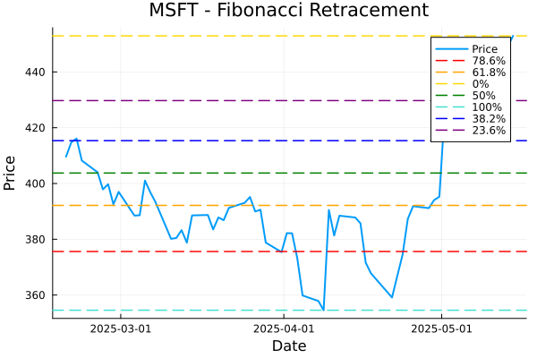
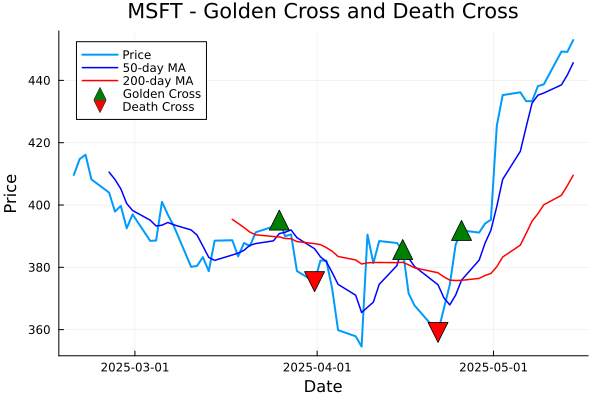

üîß Technical Indicators
üåÄ Fibonacci Retracement

üìê Fibonacci retracement levels (23.6%, 38.2%, 50%, 61.8%, etc.) are horizontal lines that indicate where
support and resistance are likely to occur based on Fibonacci numbers. These are important levels
where price might reverse direction.
üìä Average True Range (ATR)
üìè ATR measures the volatility of a stock by calculating the average of true ranges over a given period.
Higher ATR values indicate higher volatility, while lower values suggest consolidation. This helps
in setting stop-losses and determining position sizes.
✨ Moving Average Crosses (Golden Cross & Death Cross)

⭐ A Golden Cross occurs when a shorter-term moving average crosses above a longer-term moving average,
typically the 50-day MA crossing above the 200-day MA, indicating a potential bullish trend.
A Death Cross is the opposite, potentially signaling a bearish trend.
üìä Volume Analysis

üìà Volume analysis shows trading volume with color coding based on price direction - green for up days
and red for down days. This visualization helps identify buying and selling pressure, with higher volume
often confirming price movements.